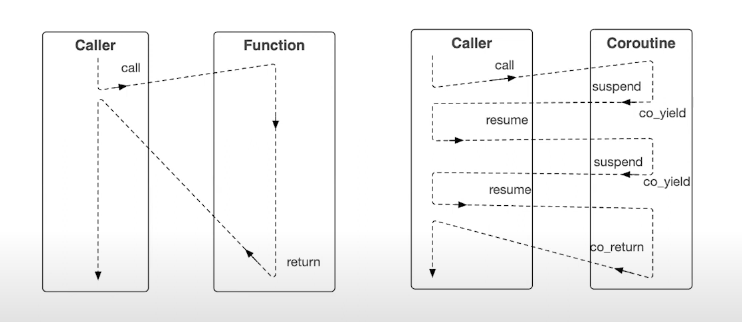

Posted Joe Chu cpp13 minutes read (About 1991 words)0 visits
Coroutine in C++
Introduced in C++20
Table of Contents
Coroutine Basics
State machine of a coroutine
First coroutine program
Resume a suspending coroutine
Lazy and eager coroutines
Restrictions on couroutines
co_yield
Access coroutine data
co_return
co_await
1. Coroutine Basics
Coroutine is a special function that suspends its execution and then resumes later. In C++, coroutines are stackless. They suspend by returning to the caller and the data that is required for later execution is stored on heap. Compared to regular functions, coroutines are suspendable by calling co_yield or co_await. Once the coroutine decides to suspend itself, it gives control back to the caller. This allows the caller to resume executing other instructions and at some point resume the coroutine. Finally, when a coroutine reaches the end of its execution, it will return to the caller by calling co_return.

Coroutines in C++ do not inherently run on separate threads. They are executed in the same thread as the caller, but they provide a way to suspend and resume execution at certain points, allowing other work to be done in between.
keyword
actions
state
co_yield
output
suspend
co_await
input
suspend
co_return
output
end
2. State machine of a coroutine
A simple diagram shows the state transition of a coroutine.
structReturnType { // A wrapper type. This is the return type of the coroutine function's prototype structpromise_type { // the compiler looks for a type with the exact name promise_type inside the return type std::suspend_never initial_suspend(){return {}; } // gets executed before a coroutine starts execution std::suspend_never final_suspend()noexcept{return {}; } // gets executed when a coroutine finishes execution ReturnType get_return_object(){return {}; } // this is the first method gets called when the coroutine is called for the first time voidunhandled_exception(){} }; };
ReturnType foo(){ std::cout << "1 foo\n"; co_awaitstd::suspend_always(); // suspend std::cout << "2 foo\n"; // will never execute since coroutine suspends in the above line }
intmain() { ReturnType r = foo(); return0; }
1
1 foo
4. Resume a suspending coroutine
Coroutine provides class template coroutine_handle to refer to a coroutine. According to official documentation, it has 3 main specilizations.
Primary template, can be created from the promise object of type Promise.
Specialization std::coroutine_handle<void> erases the promise type. It is convertible from other specializations.
Specialization std::coroutine_handle<std::noop_coroutine_promise> refers to no-op coroutines. It cannot be created from a promise object
According to cppreference, courotines do not apply to some cases, such as variadic arguments, plain return statements, or placeholder return types (auto or Concept), consteval functions, constexpr functions, constructors, destructors, and the main function.
Some common scenarios where we can use coroutines.
To use co_yield, promise_type needs to define a method yield_value. After yield_value is called, the coroutine suspends and it gives the control back to the caller.
doublecaller(){ std::coroutine_handle<ReturnType::promise_type> h = AccessDataCoroutine(); // ReturnType contains the coroutine handle ReturnType::promise_type promise = h.promise(); // reference to the promise object. int i = 1; while (!h.done()) { promise.setValue(static_cast<double>(i++)); h.resume(); } return promise.getValue(); }
intmain() { double v = caller(); std::cout << "Access data from coroutine: " << v << "\n"; }
1 2 3 4 5
1 AccessDataCoroutine 2 AccessDataCoroutine 3 AccessDataCoroutine ~promise_type Access data from coroutine: 3
9. co_return
co_return must be defined inside promise_type struct, otherwise, the compiler will shows error message.
When the coroutine reaches co_return, it will return to its caller and its state will become end. co_return can either return nothing or value(s).
return_void(): In this case, a good practice is to performan some cleanup operations inisde the promise_type, such as free up the allocated memory or reset the values.
return_value(T val): Depending on the return type, we should decide the data type here. This return_value method will get executed by the runtime system when coroutines return with non-empty co_return.
It is important to know that these two return methods must be implemented inside the promise_type and these two can not exist at the same time.
suspend_always and suspend_never are both C++ structs that define their own member functions for deciding the coroutine behaviors when co_await is called.
member function
description
await_ready
return a bool
- if true, call await_suspend - if false, return control to caller
await_suspend
- if return void, return control back to caller - if return bool 1. true - return to caller 2. false - resume coroutine - if returns a coroutine handle for some other coroutine, that handle is resumed (by a call to handle.resume())
structReturnType { // A wrapper type. This is the return type of the coroutine function's prototype structpromise_type { // the compiler looks for a type with the exact name promise_type inside the return type std::suspend_never initial_suspend(){return {}; } // gets executed before a coroutine starts execution std::suspend_never final_suspend()noexcept{return {}; } // gets executed when a coroutine finishes execution ReturnType get_return_object(){return {}; } // this is the first method gets called when the coroutine is called for the first time voidunhandled_exception(){} }; };
ReturnType foo(){ std::cout << "1 foo\n"; co_awaitSuspendAlways(); // suspend std::cout << "2 foo\n"; // will never execute since coroutine suspends in the above line }
intmain() { ReturnType r = foo(); return0; }
1 2 3
1 foo await_ready() await_suspend()
Since after the coroutine is suspended, we never resume it, so await_resume will not be called. Similarly, we can define a customized version of std::suspend_never. The main difference is that await_ready() should return true this time, and the coroutine will resume its execution.